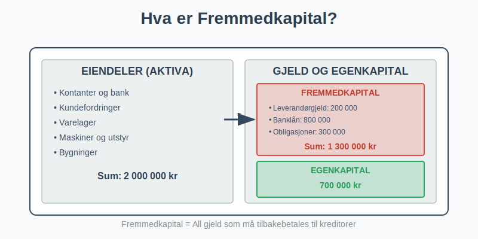
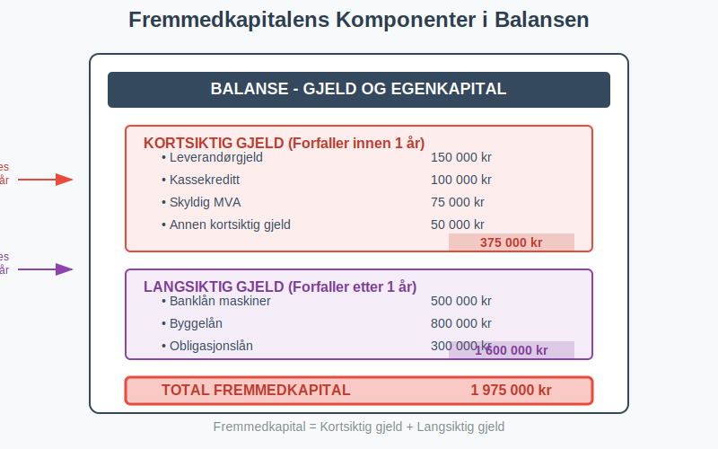
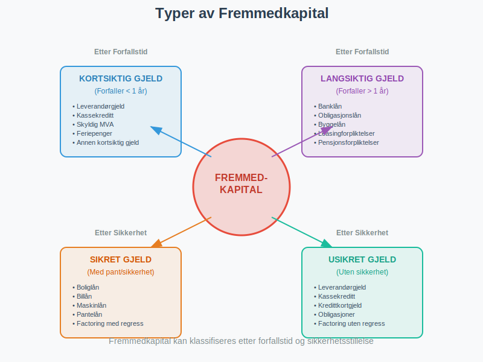
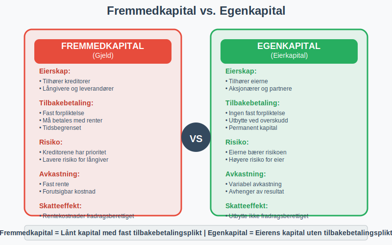
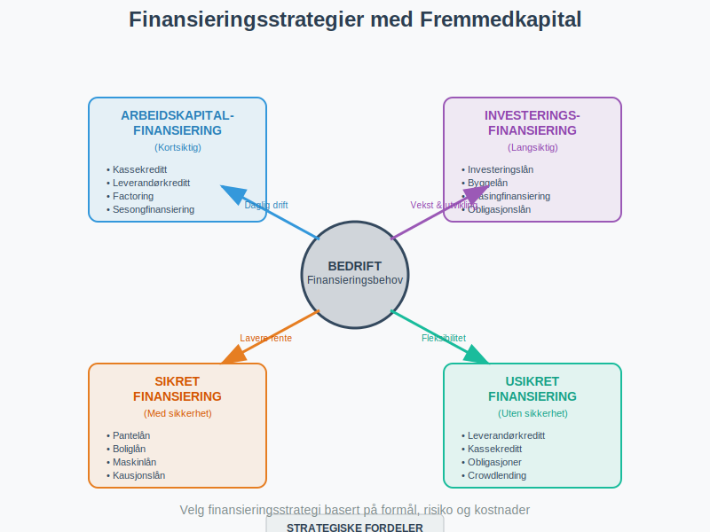

Fremmedkapital er den delen av et selskaps totale kapital som kommer fra kreditorer og långivere. Som motsetning til egenkapital, representerer fremmedkapital all gjeld som selskapet har påtatt seg og som må tilbakebetales med renter. Fremmedkapital er en fundamental del av finanskapital og spiller en viktig rolle i regnskap og finansiell analyse.

Definisjon og Grunnleggende Forståelse
Fremmedkapital kan defineres på flere måter:
Regnskapsmessig Definisjon
Fremmedkapital = Total Gjeld (Kortsiktig + Langsiktig)
Dette omfatter alle forpliktelser som selskapet har overfor eksterne parter og som må tilbakebetales.
Økonomisk Perspektiv
Fra et økonomisk perspektiv representerer fremmedkapital:
- Lånt kapital fra kreditorer og långivere
- Forpliktelser som må tilbakebetales med renter
- Tidsbegrenset finansiering med faste vilkår
- Kapital som gir kreditorene prioritet ved konkurs

Fremmedkapitalens Komponenter
Fremmedkapital består av flere hovedkategorier som vises i balansen:
1. Kortsiktig Gjeld (Forfaller innen 1 år)
Leverandørgjeld
- Gjeld til leverandører for varer og tjenester
- Vanligvis 30-60 dagers betalingsfrist
- Rentefri kreditt i kredittperioden
Kortsiktig banklån
- Kassekreditt og driftskreditt
- Fleksibel finansiering av arbeidskapital
- Variabel rente
Skyldig offentlige avgifter
- Arbeidsgiveravgift
- MVA som skal betales til staten
- Forskuddstrekk fra ansatte
Annen kortsiktig gjeld
- Påløpte kostnader
- Feriepenger
- Utbytte som skal utbetales
2. Langsiktig Gjeld (Forfaller etter 1 år)
Langsiktige banklån
- Investeringslån for maskiner og utstyr
- Byggelån og eiendomslån
- Fast eller variabel rente
Obligasjonslån
- Lån fra obligasjonsmarkedet
- Standardiserte lånevilkår
- Omsettelige verdipapirer
Leasingforpliktelser
- Finansiell leasing av eiendeler
- Operasjonell leasing (IFRS 16)
- Langsiktige leiekontrakter

Beregning og Analyse av Fremmedkapital
La oss se på praktiske eksempler på hvordan fremmedkapital beregnes og analyseres:
Eksempel: Fremmedkapitalstruktur
| Gjeldstype | Beløp (NOK) | Rente | Forfallstid |
|---|---|---|---|
| KORTSIKTIG GJELD | |||
| Leverandørgjeld | 150 000 | 0% | 30 dager |
| Kassekreditt | 100 000 | 8,5% | Løpende |
| Skyldig MVA | 75 000 | 0% | 2 måneder |
| Annen kortsiktig gjeld | 50 000 | 0% | Varierende |
| Sum kortsiktig gjeld | 375 000 | ||
| LANGSIKTIG GJELD | |||
| Banklån maskiner | 500 000 | 6,2% | 5 år |
| Byggelån | 800 000 | 5,8% | 15 år |
| Obligasjonslån | 300 000 | 7,1% | 3 år |
| Sum langsiktig gjeld | 1 600 000 | ||
| TOTAL FREMMEDKAPITAL | 1 975 000 |
Gjennomsnittlig rentekostnad: (100 000 × 8,5% + 500 000 × 6,2% + 800 000 × 5,8% + 300 000 × 7,1%) / 1 700 000 = 6,4%
Fremmedkapital vs. Egenkapital
Det er viktig å forstå de grunnleggende forskjellene mellom fremmedkapital og egenkapital:
Fremmedkapital
- Tilhører kreditorer og långivere
- Fast forpliktelse til tilbakebetaling
- Kreditorene har prioritet ved konkurs
- Fast rente eller avkastning
- Tidsbegrenset kapital med forfallsdato
- Skattefradrag for rentekostnader
Egenkapital
- Tilhører eierne av selskapet
- Ingen fast forpliktelse til tilbakebetaling
- Eierne bærer risikoen for tap
- Variabel avkastning gjennom utbytte
- Permanent kapital uten forfallsdato
- Ingen skattefradrag for utbyttekostnader

Gjeldsgrad og Finansiell Risiko
Beregning av Gjeldsgrad
Gjeldsgrad = Fremmedkapital / Egenkapital
Gjeldsgraden viser forholdet mellom lånt kapital og eierkapital:
| Gjeldsgrad | Vurdering | Risiko | Betydning |
|---|---|---|---|
| Under 0,5 | Konservativ | Lav | Solid finansiell struktur |
| 0,5 - 1,0 | Moderat | Middels | Balansert finansiering |
| 1,0 - 2,0 | Aggressiv | Høy | Høy gjeldsbelastning |
| Over 2,0 | Risikabel | Meget høy | Kritisk finansiell situasjon |
Rentedekningsgrad
Rentedekningsgrad = EBIT / Rentekostnader
Dette nøkkeltallet viser selskapets evne til å betjene sin gjeld:
| Rentedekningsgrad | Vurdering | Betydning |
|---|---|---|
| Over 5 | Meget god | Trygg gjeldsbetjening |
| 3-5 | God | Akseptabel sikkerhet |
| 2-3 | Middels | Noe risiko |
| 1-2 | Svak | Høy risiko |
| Under 1 | Kritisk | Kan ikke betjene gjeld |
Fordeler og Ulemper med Fremmedkapital
Fordeler med Fremmedkapital
1. Skattefordel
- Rentekostnader er fradragsberettiget
- Reduserer selskapets skattebyrde
- Skatteskjold på renteutgifter
2. Bevarer Eierskap
- Eierne beholder full kontroll
- Ingen utvanning av eierandeler
- Gearing-effekt på avkastning
3. Fleksibilitet
- Kan tilbakebetales før forfall
- Mulighet for refinansiering
- Tilpassede lånevilkår
4. Lavere Kapitalkostnad
- Gjeld er ofte billigere enn egenkapital
- Fast rente gir forutsigbarhet
- Kreditorene krever lavere avkastning enn eierne
Ulemper med Fremmedkapital
1. Finansiell Risiko
- Fast forpliktelse til tilbakebetaling
- Risiko for konkurs ved betalingsproblemer
- Kovenanter og lånevilkår som begrenser handlingsrom
2. Rentekostnader
- Løpende kostnader uavhengig av resultat
- Renterisiko ved variabel rente
- Reduserer kontantstrøm
3. Sikkerhetsstillelse
- Krav om pant i eiendeler og fantegang. Se Fantegang.
- Personlig kausjon fra eierne
- Begrenser fremtidig låneopptag
Fremmedkapital i Ulike Selskapsformer
Aksjeselskap (AS)
- Begrenset ansvar for aksjonærene
- Selskapet hefter for gjelden med sine eiendeler
- Mulighet for obligasjonsutstedelse
- Krav til aksjekapital som sikkerhet
Enkeltpersonforetak
- Ubegrenset personlig ansvar for eieren
- Eierens private eiendeler kan tas for gjeld
- Enklere låneopptak for mindre beløp
- Høyere risiko for långivere
Ansvarlig Selskap (ANS)
- Solidarisk ansvar for alle deltakere
- Hver deltaker hefter for hele gjelden
- Kompleks ansvarsfordeling
- Krav om avtaler mellom deltakerne
Finansieringsstrategier med Fremmedkapital
Arbeidskapitalfinansiering
Kortsiktig Finansiering
- Kassekreditt for daglig drift
- Leverandørkreditt for innkjøp
- Factoring av kundefordringer
- Sesongfinansiering for varierende behov
Investeringsfinansiering
Langsiktig Finansiering
- Investeringslån for maskiner og utstyr
- Byggelån for eiendom og anlegg
- Leasingfinansiering som alternativ til kjøp
- Obligasjonslån for større investeringer

Fremmedkapital og Kontantstrøm
Påvirkning på Kontantstrøm
Operasjonell Kontantstrøm
- Renteutbetalinger reduserer driftskontantstrøm
- Skattebesparelser fra rentefradrag
- Arbeidskapitalendringer påvirker likviditet
Finansiell Kontantstrøm
- Låneopptag øker kontantstrøm
- Avdrag reduserer kontantstrøm
- Refinansiering kan forbedre vilkår
Likviditetsstyring
Viktige Prinsipper:
- Match løpetid på lån med investeringer
- Diversifiser finansieringskilder
- Oppretthold tilstrekkelig likviditetsreserve
- Overvåk gjeldsforfall og refinansieringsbehov
Fremmedkapital og Risikostyring
Renterisiko
Typer Renterisiko:
- Refinansieringsrisiko ved forfall
- Renterisiko på variabel rente
- Basisrisiko mellom ulike rentesatser
Risikostyring:
- Rentesikring gjennom derivater
- Mix av fast og variabel rente
- Naturlig sikring mot renterisiko
Kredittrisiko
For Långivere:
- Risiko for at låntaker ikke kan betale
- Kredittanalyse og rating
- Sikkerhetsstillelse og kovenanter
For Låntakere:
- Risiko for refinansieringsproblemer
- Diversifisering av finansieringskilder
- Oppbygging av kreditthistorikk
Regnskapsføring av Fremmedkapital
Balanseføring
Kortsiktig Gjeld:
- Føres til pålydende verdi
- Klassifiseres som kortsiktig hvis forfall < 1 år
- Påløpte renter føres som gjeld
Langsiktig Gjeld:
- Kan føres til amortisert kost
- Etableringsgebyrer amortiseres over løpetiden
- Omprioritering til kortsiktig ved nærme forfall
Resultatføring
Rentekostnader:
- Føres løpende i resultatregnskapet
- Periodisering av påløpte renter
- Skattemessig fradrag for rentekostnader
Fremmedkapital i Finansiell Analyse
Viktige Nøkkeltall
1. Gjeldsgrad Gjeldsgrad = Total gjeld / Egenkapital
2. Egenkapitalandel Egenkapitalandel = Egenkapital / Sum eiendeler
3. Rentedekningsgrad Rentedekningsgrad = EBIT / Rentekostnader
4. Gjeldsbetjeningsevne Gjeldsbetjeningsevne = (EBITDA - Skatt - Investeringer) / (Renter + Avdrag)
Benchmarking og Sammenligning
Bransjestandarder:
- Sammenlign med bransjegjennomsnitt
- Vurder konjunkturmessige forhold
- Analyser historisk utvikling
Praktiske Råd for Fremmedkapitalstyring
For Gründere og Små Bedrifter
- Start konservativt - ikke ta for mye gjeld tidlig
- Bygg kreditthistorikk gjennom mindre lån
- Diversifiser finansieringskilder
- Oppretthold god kommunikasjon med långivere
- Planlegg refinansiering i god tid
For Etablerte Bedrifter
- Optimaliser kapitalstruktur
- Utnytt skattefordeler ved gjeld
- Sikre mot renterisiko
- Overvåk finansielle nøkkeltall
- Vurder alternative finansieringsformer
For Vekstbedrifter
- Balanser vekst og finansiell stabilitet
- Utnytt gearing-effekten forsiktig
- Sikre fleksible lånevilkår
- Planlegg for ulike vekstscenarier
- Vurder hybride finansieringsformer
Fremtidige Trender innen Fremmedkapital
Digitalisering og Fintech
Nye Finansieringsformer:
- Crowdlending og peer-to-peer utlån
- Digitale låneplatformer
- Automatisert kredittanalyse
- Blockchain-baserte låneløsninger
Bærekraftig Finansiering
Grønne Obligasjoner:
- Miljøvennlige investeringsprosjekter
- Lavere rente for bærekraftige lån
- ESG-kriterier i kredittanalyse
Regulatoriske Endringer
Basel III og IV:
- Strengere kapitalkrav for banker
- Påvirkning på lånetilgjengelighet
- Økte kostnader for risikofylte lån
Konklusjon
Fremmedkapital er en fundamental del av bedrifters finansieringsstruktur og spiller en viktig rolle i regnskapet. Ved å forstå de ulike typene fremmedkapital, deres fordeler og ulemper, samt hvordan de påvirker selskapets finansielle stilling, kan bedriftsledere ta informerte beslutninger om optimal kapitalstruktur.
Nøkkelpunkter å huske:
- Fremmedkapital må tilbakebetales med renter
- Det gir skattefordeler gjennom rentefradrag
- Gjeldsgrad må balanseres mot finansiell risiko
- Diversifisering av finansieringskilder reduserer risiko
- Timing av refinansiering er kritisk for suksess
Riktig bruk av fremmedkapital kan akselerere vekst og øke avkastning på egenkapital, men krever nøye planlegging og kontinuerlig overvåking av finansiell risiko. Ved å kombinere fremmedkapital med egenkapital på en optimal måte, kan bedrifter oppnå sine strategiske mål samtidig som de opprettholder finansiell stabilitet.
For en fullstendig oversikt over finansieringsformer, se Hva er Finansiering?.